STARTER (for 1.6 kW Type) > REASSEMBLY |
| 1. INSTALL STARTER CENTER BEARING CLUTCH SUB-ASSEMBLY |
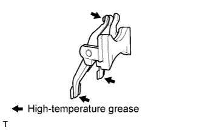 |
Apply high-temperature grease to the starter drive lever set pin, as shown in the illustration.
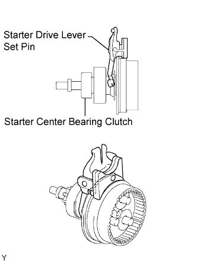 |
Install the starter drive lever set pin to the starter center bearing clutch.
Install the starter center bearing clutch and starter drive lever set pin together to the starter drive housing.
| 2. INSTALL PLANETARY GEAR |
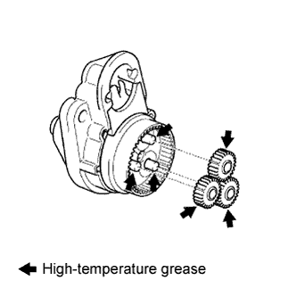 |
Apply high-temperature grease to the planetary gears and pin parts of the planetary shaft.
Install the 3 planetary gears onto the pins of the starter center bearing clutch.
| 3. INSTALL STARTER ARMATURE ASSEMBLY |
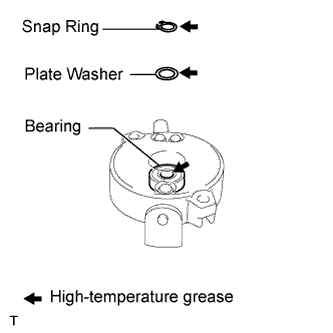 |
Apply high-temperature grease to the plate washer, armature shaft, bearing and a new snap ring.
Install the starter armature and plate washer into the starter commutator end frame.
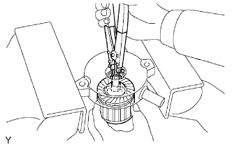 |
Using snap ring pliers, install a new snap ring.
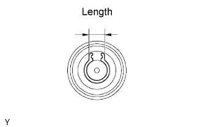 |
Check the snap ring length.
Using a vernier caliper, measure the snap ring length.
| 4. INSTALL STARTER COMMUTATOR END FRAME COVER |
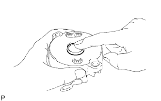 |
Install the starter commutator end frame cover into the starter commutator end frame.
| 5. INSTALL STARTER ARMATURE PLATE |
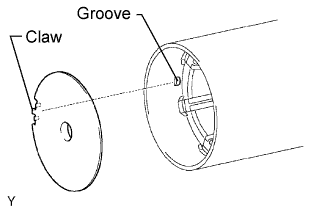 |
Align the claw of the armature plate with the groove inside the starter yoke, and install the starter armature plate.
| 6. INSTALL STARTER COMMUTATOR END FRAME ASSEMBLY |
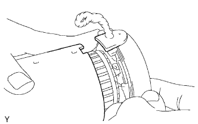 |
Align the starter commutator end frame rubber with the groove of the starter yoke.
Install the starter commutator end frame to the starter yoke.
| 7. INSTALL STARTER YOKE ASSEMBLY |
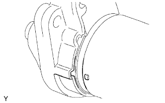 |
Align the claw of the starter yoke with the groove inside the starter drive housing.
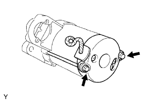 |
Install the starter yoke with the 2 bolts.
| 8. INSTALL REPAIR SERVICE STARTER KIT |
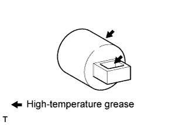 |
Apply high-temperature grease to the plunger and hook.
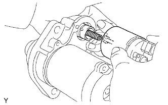 |
Hang the plunger hook of the repair service starter kit on the drive lever.
Install the plunger and return spring.
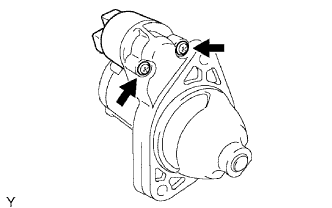 |
Install the repair service starter kit with the 2 screws.
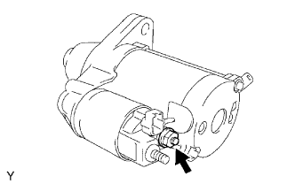 |
Connect the lead wire to the terminal with the nut.